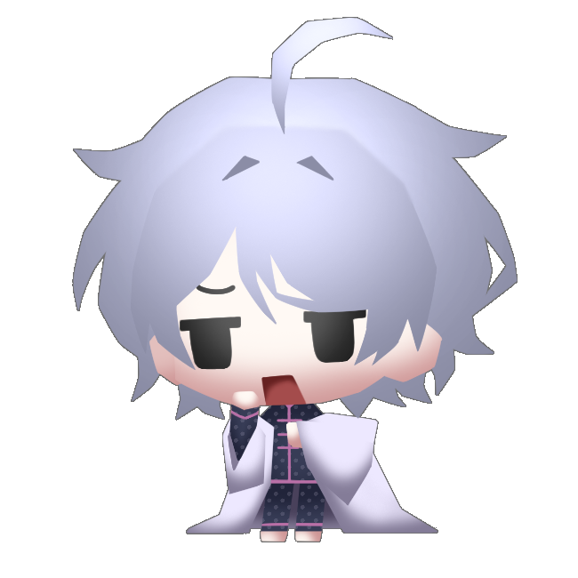
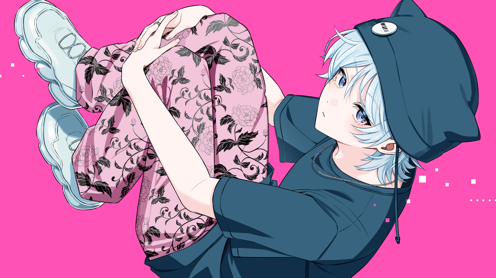
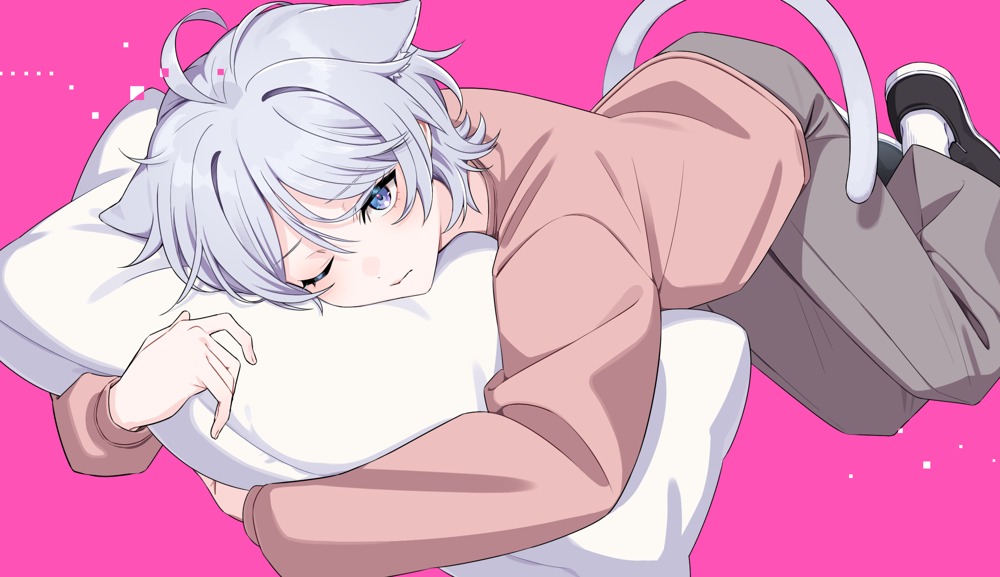
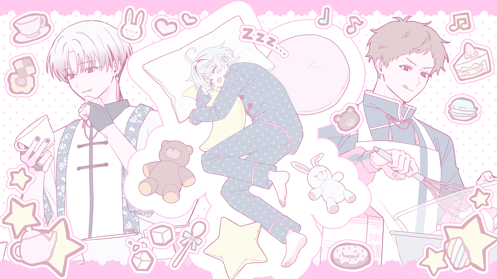
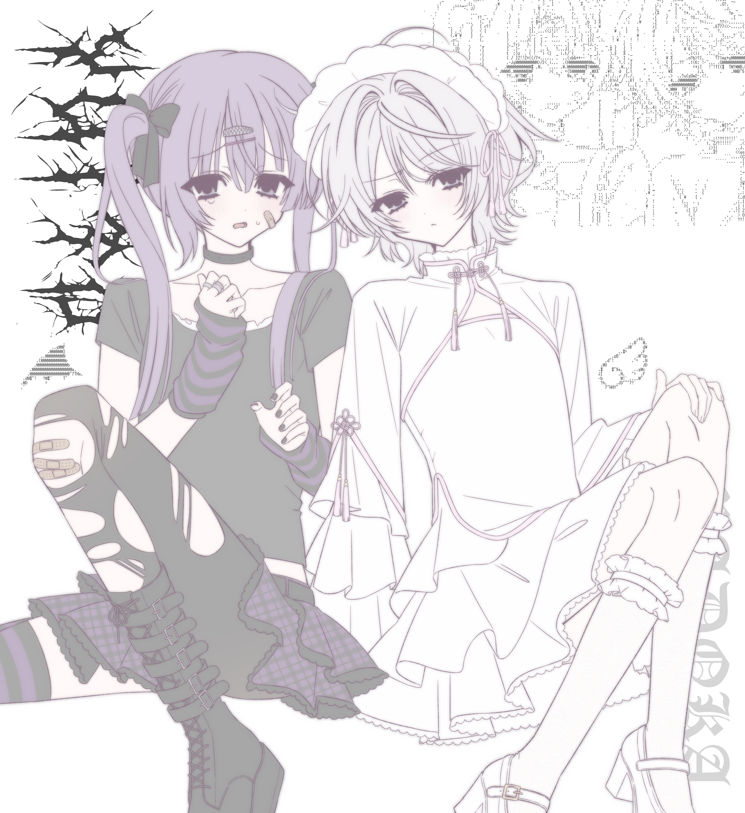

˙˚ʚ About My Favorite ɞ˚˙

| 名前 | 恵美 まどか |
|---|---|
| 誕生日 | 11月8日 |
| 血液型 | AB型 |
| 好きなもの | 二度寝 |
| 嫌いなもの | 鏡 / 誠一の説教 |
だって仕事したくないんだもーん
♡
✧
♡
✧
♡
✧

₊˚✧꒰ Cute Point ꒱✧˚₊
- 天使みたいな見た目： 華奢で色白な銀髪銀目！可憐で儚げな美少女にしか見えないのに、実は22歳男性で超毒舌なギャップが最高すぎる…👼 ぴょこんと生えてるアホ毛もかわいい💞
- 圧倒的ぐーたら探偵： 三度の飯より寝ることが大好きな超・怠け者。斜に構えたワガママなところも愛おしい💤
- お世話され上手： 誠一に小言を言われ怒られつつ甘やかされ、健三には全力で崇め奉られて甘やかされている愛され力…✨ 甘いお菓子🧁と美味しい紅茶☕を飲んですくすく育ってね…💗
₊˚✧꒰ Image Song ꒱✧˚₊
♪：「ワールドイズマイン」 / ryo
世界で一番おひめさま♡ CPK! Remixも好き👑
世界で一番おひめさま♡ CPK! Remixも好き👑
♪：「グリズリーに襲われたら♡」 / 神宿
パジャマだって駆けつけてね♡
パジャマだって駆けつけてね♡
♪：「ボイドロイド」 / r-906
詞が無かったら届かない 詞があっても届かない
詞が無かったら届かない 詞があっても届かない
₊˚✧꒰ Check! Cute Scenes ꒱✧˚₊
₊˚✧꒰ Gallery ꒱✧˚₊
先生の水色ベースの銀髪＋水色の瞳も好きだけど、
公式の灰色(紫色)ベースの銀髪＋紫色の瞳の銀髪も好き…💕
小説は銀色に輝いて見える淡い色をした髪に、光の加減で銀色みを帯びている黒い瞳👀
ウルフっぽくするか、ミディアムショートにするかも悩みがち😵
どれも好きだから描くとき迷う💦




存在がかわいい！ 怒った時とか不機嫌なときにぷくって頬を膨らませるのがあざとすぎる😤
誠一🧸と健三🐇をイメージしたぬいぐるみがベッドの近くに落ちてたり、
たまに触って遊んでるところが記録者大好きなんだろうなってわかって尊い…
もっとたくさんかわいいお洋服を着てほしいな～🩰